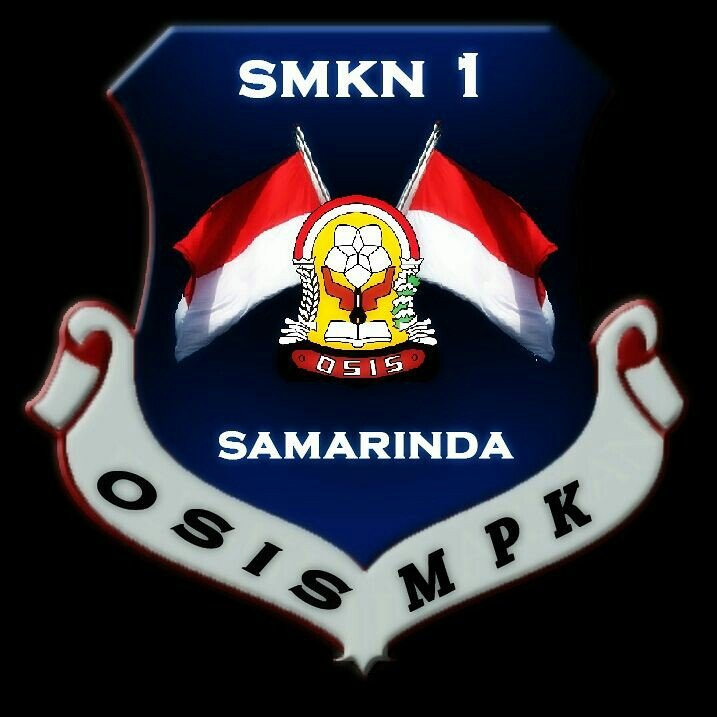

🎀 Surat Pink
Kepada Kakak OSIS yang saya hormati,
Terima kasih sudah membimbing kami selama kegiatan MPLS ini. Walaupun waktunya singkat, saya bisa merasakan betapa sabarnya Kakak dalam membimbing, mengarahkan, dan menjaga suasana tetap menyenangkan.
Kakak menunjukkan teladan yang baik — tegas namun tetap ramah, disiplin tapi tidak menakutkan. Kehadiran Kakak memberi kesan yang sangat positif.
Semoga Kakak nanti, bisa meraih semua cita-cita dan tetap menjadi pribadi hebat seperti sekarang.
Hormat saya,
Badruddin - TJKT